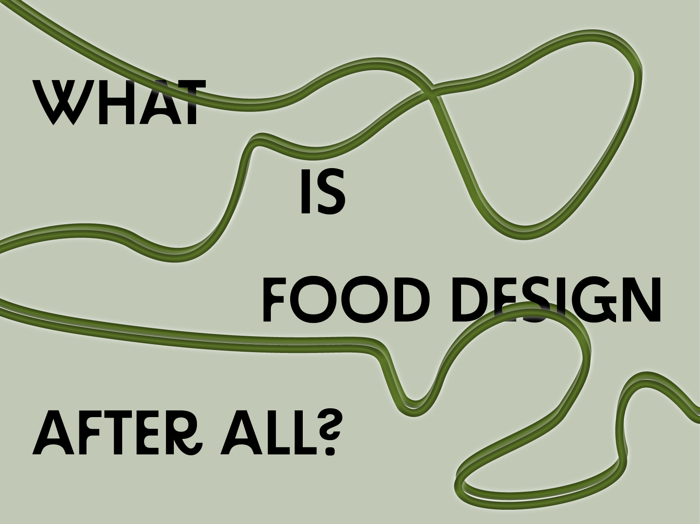

Food & Design
Hello!
My name is Ana Grynberg and this is my Food Design journal. I'm passionate about culinary and design and I have searched for ways to combine both in my projects and looked for various inspirations in this universe. Luckily there are other Food Designers out there with great innovation and advice on how to make Food Design a powerful tool for innovative solutions and creative advancements. Entering this universe can be a little overwhelming, so here I will be sharing my findings, showing my own projects, and tasting new ideas! But before I go too deep, What is Food design after all?
You probably know what Design and Food is right? But what about Food Design?
Let's begin by defining each word. Food is what the dictionary defines as: 'any nutritious substance that people or animals eat or drink or that plants absorb in order to maintain life and growth', while Design, on the other hand, is 'a plan or drawing produced to show the look and function or workings of a building, garment, or other object before it is built or made.'
Well, in my view, Food Design is exactly that. Is the plan created around the food experience that can generate a positive impact both on the consumer and the environment. What do you think? Click Here, to give your own take on this question!
I'm excited to start sharing with you all and hopefully, you will be able to have a quick taste of what this arising subject is and what inspiring Food Designers are up to!
See ya!